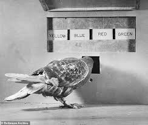

EXPERIMENTS

Domestic pigeons are model organisms commonly used in laboratory experiments relating to biology;
often to test medicines and chemical substances, or in cognitive sciences.
Pigeons have been trained to distinguish between cubist and impressionist paintings.
In Project Sea Hunt, a US coast guard search and rescue project in the 1970s/1980s,
pigeons were shown to be more effective than humans in spotting shipwreck victims at sea.
Research in pigeons is widespread, encompassing shape and texture perception, exemplar and prototype memory,
category-based and associative concepts, and many more unlisted here.
Pigeons are able to acquire orthographic processing skills,
which form part of the ability to read, and basic numerical skills equivalent to those shown in primates.
SKINNER BOX
During World War II, Skinner experimented with ways to guide armed missiles towards their target accurately so that innocent lives are saved. For this project, he
chose to take the help of pigeons! Why? Because they are gentle creatures and easy to train.  He taught the pigeons to recognise a target, and peck when they saw it. When the pigeons pecked, the missiles would navigate accordingly. The project was named as the Pigeon Project. How did he teach them to do this?
By making them play ping-pong! The pigeons did not use a paddle. Instead, they pecked the ball back and forth. If the pigeons successfully passed the ball, they were rewarded with a treat.
With the help of positive reinforcement, soon, the pigeons were ready to help the military! The Pigeon Project, however, had one major flaw. Because the missile drop killed the pigeons, a large number of these birds were needed,
and the military was unable to fund this. As a result, the project was called off. However, if you want to see the cockpit prototype in which these pigeons pecked and guided the missile, you can go to the American History Museum in Washington DC!
He taught the pigeons to recognise a target, and peck when they saw it. When the pigeons pecked, the missiles would navigate accordingly. The project was named as the Pigeon Project. How did he teach them to do this?
By making them play ping-pong! The pigeons did not use a paddle. Instead, they pecked the ball back and forth. If the pigeons successfully passed the ball, they were rewarded with a treat.
With the help of positive reinforcement, soon, the pigeons were ready to help the military! The Pigeon Project, however, had one major flaw. Because the missile drop killed the pigeons, a large number of these birds were needed,
and the military was unable to fund this. As a result, the project was called off. However, if you want to see the cockpit prototype in which these pigeons pecked and guided the missile, you can go to the American History Museum in Washington DC!
A Skinner box is an enclosed apparatus that contains a bar or key that an animal subject can manipulate in order to obtain reinforcement.
Developed by B. F. Skinner and also known as an operant conditioning chamber,
this box also has a device that records each response provided by the animal as well as the unique schedule of
reinforcement that the animal was assigned. Common animal subjects include rats and pigeons.
Skinner was inspired to create his operant conditioning chamber as an extension of the puzzle boxes that
Edward Thorndike famously used in his research on the law of effect. Skinner himself did not refer to this device as a
Skinner box, instead preferring the term "lever box.